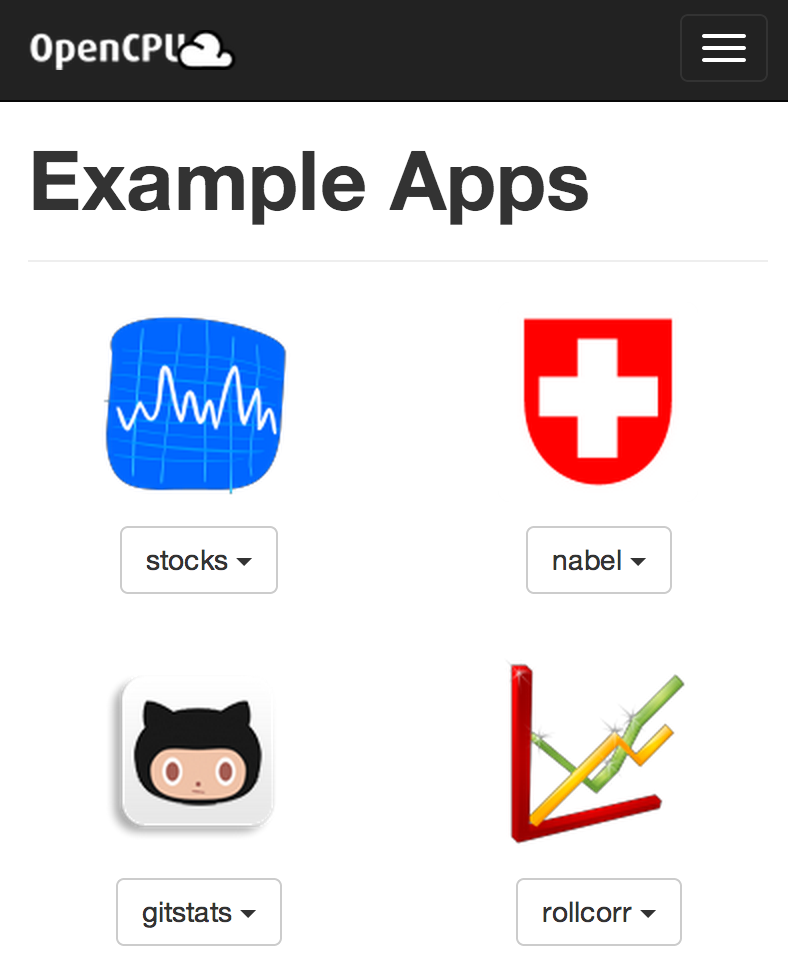

Definition
Statistical Software as we know it:
- Emphasis on UI
- Interactive
- Local machine
- Single-user
- Trial-and-error
- Copy/paste results
- Inventive, experimental, volatile
Jeroen Ooms
UCLA Statistics


profile r-base {
#include <abstractions/base>
#include <abstractions/nameservice>
@{PROC}/[0-9]*/attr/current r,
/bin/* rix,
/etc/R/* r,
/etc/fonts/** mr,
/etc/resolv.conf r,
/tmp/** rw,
/usr/bin/* rix,
/usr/lib/R/bin/* rix,
/usr/lib{,32,64}/** mr,
/usr/lib{,32,64}/R/bin/exec/R rix,
/usr/local/lib/R/** mr,
/usr/local/share/** mr,
}
RAppArmor: bindings security methods in Linux:
#Set 100M memory limit
> rlimit_as(100 * 1024 * 1024)
#Set 4 core limit
> rlimit_nproc(4)
#apply security profile
> aa_change_profile("my_secure_profile")
#not allowed
> list.files("/")
character(0)
#Sandboxed evaluation
> eval.secure({
#arbitrary code
x <- rnorm(3)
mean(x)
#With restrictions
}, profile="my_secure_profile", rlimit_as = 100 * 1024 * 1024, rlimit_nproc = 4)
[1] 0.01563452
Dynamic sandboxing with eval.secure:
JSON, XML, Protocol Buffers, etc#Random object
x <- list(foo = matrix(1:8, nrow=2))
#Convert to JSON
json <- toJSON(x)
cat(json)
{ "foo" : [ [ 1, 3, 5, 7 ], [ 2, 4, 6, 8 ] ] }
#Convert back to R
y <- fromJSON(json)
all.equal(x,y)
[1] TRUE
> print(y)
$foo
[,1] [,2] [,3] [,4]
[1,] 1 3 5 7
[2,] 2 4 6 8
> toJSON(iris[1:2,], pretty=T)
[
{
"Sepal.Length" : 5.1,
"Sepal.Width" : 3.5,
"Petal.Length" : 1.4,
"Petal.Width" : 0.2,
"Species" : "setosa"
},
{
"Sepal.Length" : 4.9,
"Sepal.Width" : 3,
"Petal.Length" : 1.4,
"Petal.Width" : 0.2,
"Species" : "setosa"
}
]
#matrix
> identical(volcano, fromJSON(toJSON(volcano)))
[1] TRUE
#data frame
> identical(cars, fromJSON(toJSON(cars)))
[1] TRUE
#factors are coersed to strings
> json <- toJSON(iris)
> iris2 <- fromJSON(json)
> all.equal(iris, iris2)
Component “Species”: 'current' is not a factor
> iris2$Species <- as.factor(iris2$Species)
> all.equal(iris, iris2)
[1] TRUE
